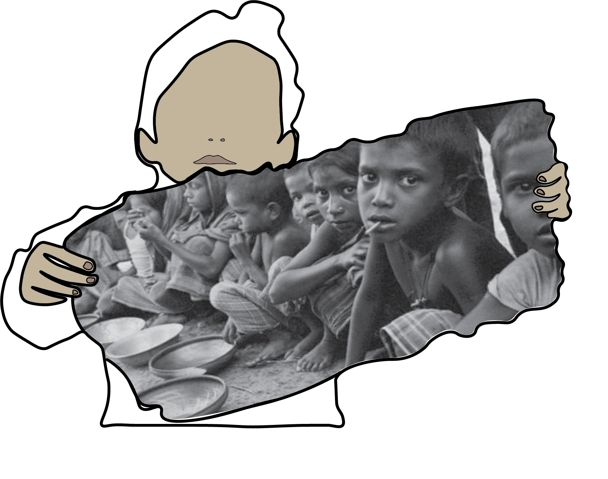

2,37 Billion people are without food
Or unable to eat a healthy, balanced
diet on a regular basis
Almost 690 million people around the world experienced hunger in 2019, equivalent to 8.9 per cent of the world
population – an increase of nearly 60 million in five years.

An estimated 2 billion people, 25.9 per cent of the world population, were affected by moderate or severe food insecurity in 2019, up from 22.4 per cent in 2015. The fastest rise was recorded in Latin America and the Caribbean, although the highest levels were registered in sub-Saharan Africa.
In women, anaemia increases the risk of adverse maternal and neonatal outcomes.
In 2019, the global prevalence of anaemia was 29.9 per cent in women of reproductive age, 29.6 per cent in non-pregnant women and 36.5 per cent in pregnant women.
The prevalence was higher in Central and Southern Asia, at 47.5 per cent in women of reproductive age.
EVENTS
HLPF 2021 Online High-level Side Event -
Leveraging Science, Technology, and Innovation to Build More Resilient
Food Systems: the Case of the Juncao Technology
The State of Food Security and Nutrition in the World 2021 (SOFI)
Important Links
https://sdgs.un.org/topics/food-security-and-nutrition-and-sustainable-agriculture
Link for more information
https://www.verdensmaalene.dk/
More information